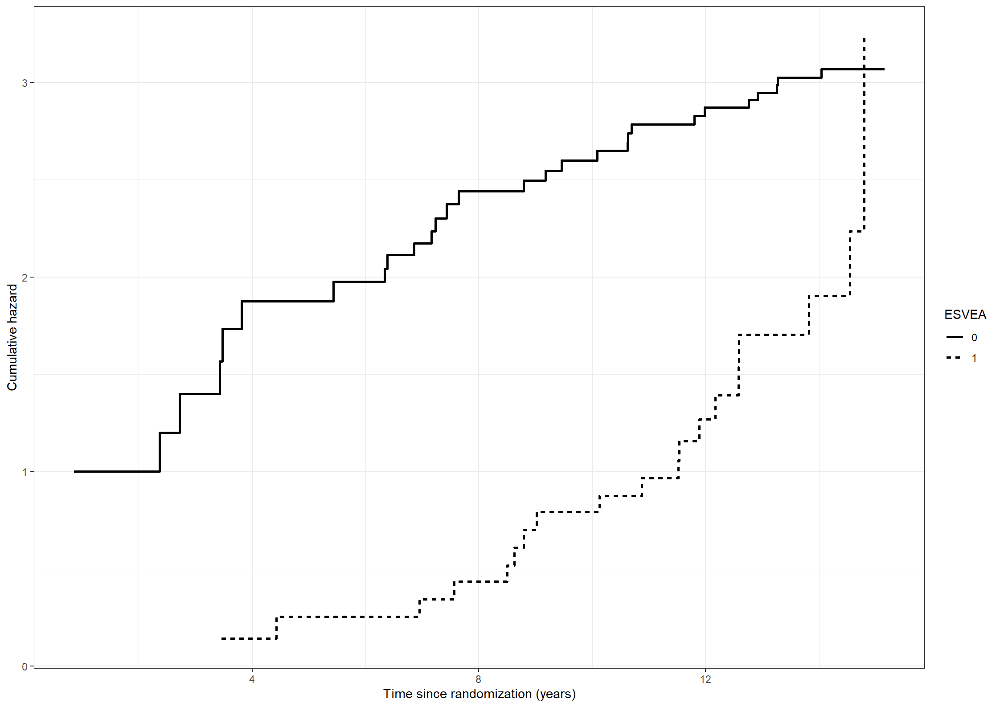

# Fit a Cox model using the pbc3 data with treatment as a covariatelibrary(survival)coxfit <-coxph(Surv(days, status !=0) ~ tment, data = pbc3, method ="breslow")summary(coxfit)
Call:
coxph(formula = Surv(days, status != 0) ~ tment, data = pbc3,
method = "breslow")
n= 349, number of events= 90
coef exp(coef) se(coef) z Pr(>|z|)
tment -0.05854 0.94314 0.21092 -0.278 0.781
exp(coef) exp(-coef) lower .95 upper .95
tment 0.9431 1.06 0.6238 1.426
Concordance= 0.517 (se = 0.029 )
Likelihood ratio test= 0.08 on 1 df, p=0.8
Wald test = 0.08 on 1 df, p=0.8
Score (logrank) test = 0.08 on 1 df, p=0.8
# Average covariate values of albumin and bilirubin per treatment library(dplyr)tabledata <- pbc3 %>%group_by(tment, tment_char) %>%summarise(n =sum(id !=0), average_albumin =mean(alb, na.rm =TRUE), # NOTE: Removes missing observations from mean computationaverage_bilirubin =mean(bili, na.rm =TRUE), )data.frame(tabledata)
# Cox model with treatment, albumin and bilirubin as covariates library(survival)coxfit <-coxph(Surv(days, status !=0) ~ tment + alb + bili,data = pbc3)coxfit
Call:
coxph(formula = Surv(days, status != 0) ~ tment + alb + bili,
data = pbc3)
coef exp(coef) se(coef) z p
tment -0.4965639 0.6086184 0.2256162 -2.201 0.0277
alb -0.1156596 0.8907784 0.0212810 -5.435 5.48e-08
bili 0.0089494 1.0089895 0.0009801 9.131 < 2e-16
Likelihood ratio test=99.06 on 3 df, p=< 2.2e-16
n= 343, number of events= 88
(6 observations deleted due to missingness)
Code show/hide
proc phreg data=pbc3;model days*status(0)=tment alb bili / rl;run;
library(stats)library(jtools) # For using summ() function to get exp(beta)options(contrasts=c("contr.treatment", "contr.poly"))poism <-glm(fail ~-1+tment + timegroup +offset(log(risktime/365.25)), data = pbc3mult,family = poisson)summ(poism, exp = T,digits =3, model.info = F, model.fit = F)
# Poisson model with treatment, albumin and bilirubin as covariatespoismod_t25 <-glm(fail ~ tment + alb + bili+ timegroup-1+offset(log(risktime/365.25)),data=pbc3mult,family=poisson)summary(poismod_t25)
Call:
glm(formula = fail ~ tment + alb + bili + timegroup - 1 + offset(log(risktime/365.25)),
family = poisson, data = pbc3mult)
Coefficients:
Estimate Std. Error z value Pr(>|z|)
tment -0.4753406 0.2240970 -2.121 0.03391 *
alb -0.1123359 0.0212829 -5.278 1.3e-07 ***
bili 0.0084593 0.0009392 9.007 < 2e-16 ***
timegroup1 1.2879891 0.8058179 1.598 0.10996
timegroup2 2.1457404 0.8328628 2.576 0.00999 **
timegroup3 1.6076330 1.0120683 1.588 0.11218
---
Signif. codes: 0 '***' 0.001 '**' 0.01 '*' 0.05 '.' 0.1 ' ' 1
(Dispersion parameter for poisson family taken to be 1)
Null deviance: 1637.87 on 611 degrees of freedom
Residual deviance: 350.73 on 605 degrees of freedom
(12 observations deleted due to missingness)
AIC: 538.73
Number of Fisher Scoring iterations: 6
Code show/hide
proc genmod data=pbc3mult; class tment (ref='0') interv;model fail= tment interv alb bili / dist=poi offset=logrisk ;run;
# Additive Aalen models - available with timereglibrary(timereg)nonparmod <-aalen(Surv(days, status !=0) ~ tment, data = pbc3)summary(nonparmod)
Additive Aalen Model
Test for nonparametric terms
Test for non-significant effects
Supremum-test of significance p-value H_0: B(t)=0
(Intercept) 5.96 0.000
tment 1.60 0.714
Test for time invariant effects
Kolmogorov-Smirnov test p-value H_0:constant effect
(Intercept) 0.107 0.565
tment 0.136 0.648
Cramer von Mises test p-value H_0:constant effect
(Intercept) 7.62 0.444
tment 4.54 0.730
Call:
aalen(formula = Surv(days, status != 0) ~ tment, data = pbc3)
Code show/hide
cumhazdata <-data.frame(eventtimes = nonparmod$cum[,1],basecumhaz = nonparmod$cum[,2], cumhaztreat = nonparmod$cum[,3], cumhaztreat_ll = nonparmod$cum[,3]-1.96*sqrt(nonparmod$var.cum[,3]),cumhaztreat_ul = nonparmod$cum[,3]+1.96*sqrt(nonparmod$var.cum[,3]))# Extend lines to last observed timecumhazdata[nrow(cumhazdata)+1,] <-c(max(pbc3$days), tail(cumhazdata, 1)[-1])# Left figurefig2.11.left <-ggplot(aes(x = eventtimes /365.25, y = basecumhaz), data = cumhazdata) +geom_step(size =1) +xlab("Time since randomization (years)") +ylab("Cumulative baseline hazard") +scale_x_continuous(expand =expansion(mult =c(0.03, 0.05)), limits =c(0, 6),breaks =seq(0, 6, 1)) +scale_y_continuous(expand =expansion(mult =c(0.03, 0.05))) + theme_generalfig2.11.left
# Additive model treatment only# p-values not exactly as in book because seed changesnonparmod0 <-aalen(Surv(days, status !=0) ~ tment, data = pbc3) summary(nonparmod0)
Additive Aalen Model
Test for nonparametric terms
Test for non-significant effects
Supremum-test of significance p-value H_0: B(t)=0
(Intercept) 5.96 0.000
tment 1.60 0.738
Test for time invariant effects
Kolmogorov-Smirnov test p-value H_0:constant effect
(Intercept) 0.107 0.563
tment 0.136 0.608
Cramer von Mises test p-value H_0:constant effect
(Intercept) 7.62 0.426
tment 4.54 0.721
Call:
aalen(formula = Surv(days, status != 0) ~ tment, data = pbc3)
Code show/hide
# Constant effect of treatment per yearnonparmod01 <-aalen(Surv(days/365.25, status !=0) ~const(tment), data = pbc3) summary(nonparmod01)
Additive Aalen Model
Test for nonparametric terms
Test for non-significant effects
Supremum-test of significance p-value H_0: B(t)=0
(Intercept) 6.62 0
Test for time invariant effects
Kolmogorov-Smirnov test p-value H_0:constant effect
(Intercept) 0.0914 0.4
Cramer von Mises test p-value H_0:constant effect
(Intercept) 0.0136 0.28
Parametric terms :
Coef. SE Robust SE z P-val lower2.5% upper97.5%
const(tment) -0.00587 0.021 0.021 -0.28 0.779 -0.047 0.0353
Call:
aalen(formula = Surv(days/365.25, status != 0) ~ const(tment),
data = pbc3)
# Additive model with treatment, albumin, bilirubin# Table 2.10, first two columns# p-values not exactly as in book because seed changesnonparmod1 <-aalen(Surv(days, status !=0) ~ tment + alb + bili, data = pbc3) summary(nonparmod1)
Additive Aalen Model
Test for nonparametric terms
Test for non-significant effects
Supremum-test of significance p-value H_0: B(t)=0
(Intercept) 3.62 0.003
tment 2.66 0.120
alb 3.82 0.002
bili 4.83 0.000
Test for time invariant effects
Kolmogorov-Smirnov test p-value H_0:constant effect
(Intercept) 0.30300 0.931
tment 0.12100 0.666
alb 0.00666 0.966
bili 0.00300 0.201
Cramer von Mises test p-value H_0:constant effect
(Intercept) 14.20000 0.992
tment 3.29000 0.769
alb 0.00826 0.993
bili 0.00203 0.344
Call:
aalen(formula = Surv(days, status != 0) ~ tment + alb + bili,
data = pbc3)
Code show/hide
# Constant effects per year# Table 2.10, last two columnsnonparmod2 <-aalen(Surv(days/365.25, status !=0) ~const(tment) +const(alb) +const(bili), data = pbc3) summary(nonparmod2)
Additive Aalen Model
Test for nonparametric terms
Test for non-significant effects
Supremum-test of significance p-value H_0: B(t)=0
(Intercept) 4.03 0
Test for time invariant effects
Kolmogorov-Smirnov test p-value H_0:constant effect
(Intercept) 0.119 0.194
Cramer von Mises test p-value H_0:constant effect
(Intercept) 0.0263 0.123
Parametric terms :
Coef. SE Robust SE z P-val lower2.5% upper97.5%
const(tment) -0.04130 0.021600 0.020100 -2.05 4.02e-02 -0.08360 0.00104
const(alb) -0.00842 0.002290 0.002230 -3.77 1.63e-04 -0.01290 -0.00393
const(bili) 0.00230 0.000483 0.000384 5.98 2.17e-09 0.00135 0.00325
Call:
aalen(formula = Surv(days/365.25, status != 0) ~ const(tment) +
const(alb) + const(bili), data = pbc3)
# In-text# Constant effect of treatment, adjusted for albumin and bilirubinnonparmod3 <-aalen(Surv(days/365.25, status !=0) ~const(tment) + alb + bili, data = pbc3) summary(nonparmod3)
Additive Aalen Model
Test for nonparametric terms
Test for non-significant effects
Supremum-test of significance p-value H_0: B(t)=0
(Intercept) 3.60 0.005
alb 3.80 0.001
bili 4.83 0.000
Test for time invariant effects
Kolmogorov-Smirnov test p-value H_0:constant effect
(Intercept) 0.28500 0.950
alb 0.00954 0.805
bili 0.00315 0.130
Cramer von Mises test p-value H_0:constant effect
(Intercept) 3.16e-02 0.996
alb 5.26e-05 0.913
bili 6.52e-06 0.257
Parametric terms :
Coef. SE Robust SE z P-val lower2.5% upper97.5%
const(tment) -0.0401 0.0216 0.0204 -1.97 0.049 -0.0824 0.00224
Call:
aalen(formula = Surv(days/365.25, status != 0) ~ const(tment) +
alb + bili, data = pbc3)
Code show/hide
# Quadratic effect for albumin; p-values not exactly as in book because seed changesnonparmod44 <-aalen(Surv(days/365.25, status !=0) ~const(tment)+I(alb/10) +I(bili/100) +I((alb/10)^2), data = pbc3) summary(nonparmod44)
Additive Aalen Model
Test for nonparametric terms
Test for non-significant effects
Supremum-test of significance p-value H_0: B(t)=0
(Intercept) 3.23 0.018
I(alb/10) 3.00 0.045
I(bili/100) 4.88 0.000
I((alb/10)^2) 2.77 0.080
Test for time invariant effects
Kolmogorov-Smirnov test p-value H_0:constant effect
(Intercept) 9.420 0.241
I(alb/10) 4.950 0.240
I(bili/100) 0.365 0.064
I((alb/10)^2) 0.635 0.249
Cramer von Mises test p-value H_0:constant effect
(Intercept) 83.6000 0.347
I(alb/10) 24.4000 0.341
I(bili/100) 0.0949 0.173
I((alb/10)^2) 0.4160 0.336
Parametric terms :
Coef. SE Robust SE z P-val lower2.5% upper97.5%
const(tment) -0.0421 0.0215 0.0201 -2.09 0.0366 -0.0842 3.92e-05
Call:
aalen(formula = Surv(days/365.25, status != 0) ~ const(tment) +
I(alb/10) + I(bili/100) + I((alb/10)^2), data = pbc3)
Code show/hide
# Quadratic effect for bilirubin; p-values not exactly as in book as seed changesnonparmod43 <-aalen(Surv(days/365.25, status !=0) ~const(tment)+I(alb/10) +I(bili/100) +I((bili/100)^2), data = pbc3) summary(nonparmod43)
Additive Aalen Model
Test for nonparametric terms
Test for non-significant effects
Supremum-test of significance p-value H_0: B(t)=0
(Intercept) 3.82 0.005
I(alb/10) 4.02 0.003
I(bili/100) 3.85 0.005
I((bili/100)^2) 3.01 0.041
Test for time invariant effects
Kolmogorov-Smirnov test p-value H_0:constant effect
(Intercept) 0.440 0.687
I(alb/10) 0.117 0.625
I(bili/100) 0.612 0.402
I((bili/100)^2) 0.515 0.152
Cramer von Mises test p-value H_0:constant effect
(Intercept) 0.1320 0.776
I(alb/10) 0.0124 0.626
I(bili/100) 0.4640 0.293
I((bili/100)^2) 0.2880 0.148
Parametric terms :
Coef. SE Robust SE z P-val lower2.5% upper97.5%
const(tment) -0.0395 0.0213 0.0208 -1.89 0.0582 -0.0812 0.00225
Call:
aalen(formula = Surv(days/365.25, status != 0) ~ const(tment) +
I(alb/10) + I(bili/100) + I((bili/100)^2), data = pbc3)
# Additive hazards model with piecewise constant baseline hazards# Model with only treatment as covariate# update data setpbc3add <- pbc3multpbc3add$time1 <-with(pbc3add, (timegroup ==1)*risktime/365.25)pbc3add$time2 <-with(pbc3add, (timegroup ==2)*risktime/365.25)pbc3add$time3 <-with(pbc3add, (timegroup ==3)*risktime/365.25)pbc3add$tment0 <-with(pbc3add, (tment ==0)*risktime/365.25)pbc3add$tment1 <-with(pbc3add, (tment ==1)*risktime/365.25)pbc3add$albny <-with(pbc3add, ((alb-35)/100)*risktime/365.25)pbc3add$biliny <-with(pbc3add, ((bili-50)/1000)*risktime/365.25)# In-textadditive_pcw <-glm(fail ~ time1 + time2 + time3 + tment1 -1,data = pbc3add, start =c(0.1, 0.1, 0.1, 0),family =poisson(link ="identity"))summary(additive_pcw)
Call:
glm(formula = fail ~ time1 + time2 + time3 + tment1 - 1, family = poisson(link = "identity"),
data = pbc3add, start = c(0.1, 0.1, 0.1, 0))
Coefficients:
Estimate Std. Error z value Pr(>|z|)
time1 0.091109 0.016429 5.546 2.93e-08 ***
time2 0.131729 0.024143 5.456 4.87e-08 ***
time3 0.093734 0.046162 2.031 0.0423 *
tment1 -0.007261 0.020758 -0.350 0.7265
---
Signif. codes: 0 '***' 0.001 '**' 0.01 '*' 0.05 '.' 0.1 ' ' 1
(Dispersion parameter for poisson family taken to be 1)
Null deviance: Inf on 623 degrees of freedom
Residual deviance: 459.54 on 619 degrees of freedom
AIC: 647.54
Number of Fisher Scoring iterations: 4
Code show/hide
* Only constant effect per year possible;* Create new variables;data pbc3add; set pbc3mult; time1=(interv=1)*risktime/365.25; time2=(interv=2)*risktime/365.25; time3=(interv=3)*risktime/365.25; tment0=(tment=0)*risktime/365.25; tment1=(tment=1)*risktime/365.25;run;* link=id;* Constant effect of treatment per year;proc genmod data=pbc3add;model fail=time1 time2 time3 tment1/dist=poi link=id noint;run;
# Death without transplantationcoxph(Surv(days, status ==2) ~ tment + alb + log2bili + sex + age,method ="breslow", data = pbc3)
Call:
coxph(formula = Surv(days, status == 2) ~ tment + alb + log2bili +
sex + age, data = pbc3, method = "breslow")
coef exp(coef) se(coef) z p
tment -0.42049 0.65672 0.26822 -1.568 0.1169
alb -0.06992 0.93247 0.02906 -2.406 0.0161
log2bili 0.69178 1.99726 0.09303 7.436 1.04e-13
sex 0.48557 1.62510 0.31943 1.520 0.1285
age 0.07335 1.07611 0.01621 4.524 6.06e-06
Likelihood ratio test=98.71 on 5 df, p=< 2.2e-16
n= 343, number of events= 60
(6 observations deleted due to missingness)
Code show/hide
# Transplantationcoxph(Surv(days, status ==1) ~ tment + alb + log2bili + sex + age,method ="breslow", data = pbc3)
Call:
coxph(formula = Surv(days, status == 1) ~ tment + alb + log2bili +
sex + age, data = pbc3, method = "breslow")
coef exp(coef) se(coef) z p
tment -0.67305 0.51015 0.41318 -1.629 0.1033
alb -0.09400 0.91029 0.03871 -2.428 0.0152
log2bili 0.83213 2.29820 0.14655 5.678 1.36e-08
sex 0.20378 1.22602 0.56329 0.362 0.7175
age -0.04805 0.95309 0.02138 -2.247 0.0246
Likelihood ratio test=64.95 on 5 df, p=1.15e-12
n= 343, number of events= 28
(6 observations deleted due to missingness)
Code show/hide
# Failure of medical treatmentcoxph(Surv(days, status !=0) ~ tment + alb + log2bili + sex + age,method ="breslow", data = pbc3)
Call:
coxph(formula = Surv(days, status != 0) ~ tment + alb + log2bili +
sex + age, data = pbc3, method = "breslow")
coef exp(coef) se(coef) z p
tment -0.50964 0.60071 0.22339 -2.281 0.02252
alb -0.07136 0.93112 0.02293 -3.112 0.00186
log2bili 0.73778 2.09128 0.07768 9.497 < 2e-16
sex 0.58536 1.79563 0.26738 2.189 0.02858
age 0.03077 1.03125 0.01199 2.566 0.01029
Likelihood ratio test=134.3 on 5 df, p=< 2.2e-16
n= 343, number of events= 88
(6 observations deleted due to missingness)
Code show/hide
proc phreg data=pbc3; class tment (ref='0');model days*status(01)=tment alb log2bili sex age / rl;run;proc phreg data=pbc3; class tment (ref='0');model days*status(02)=tment alb log2bili sex age / rl;run;proc phreg data=pbc3; class tment (ref='0');model days*status(0)=tment alb log2bili sex age / rl;run;
# Cox model in column 1coxfit1 <-coxph(Surv(fuptime, dead) ~ bcg + agem, data = bissau, method ="breslow")coxfit1
Call:
coxph(formula = Surv(fuptime, dead) ~ bcg + agem, data = bissau,
method = "breslow")
coef exp(coef) se(coef) z p
bcg -0.35346 0.70225 0.14423 -2.451 0.0143
agem 0.05472 1.05624 0.03844 1.424 0.1546
Likelihood ratio test=6.29 on 2 df, p=0.04301
n= 5274, number of events= 222
Code show/hide
# Make age the time variable insteadbissau$agein <- bissau$age/(365.24/12)bissau$ageout <- bissau$agein + bissau$fuptime/(365.24/12)# Cox model in column 2# option timefix=F aligns to SAS calculation# see vignette 'Roundoff error and tied times' for survival packagecoxfit2 <-coxph(Surv(agein, ageout, dead) ~ bcg, data = bissau, method ="breslow",timefix=F)coxfit2
Call:
coxph(formula = Surv(agein, ageout, dead) ~ bcg, data = bissau,
method = "breslow", timefix = F)
coef exp(coef) se(coef) z p
bcg -0.3558 0.7006 0.1407 -2.529 0.0114
Likelihood ratio test=6.28 on 1 df, p=0.01218
n= 5274, number of events= 222
Code show/hide
proc phreg data=bissau; model fuptime*dead(0)=bcg agem / rl;run;* Make age the time variable instead;data bissau; set bissau; agein=age/(365.24/12); ageout=agein+fuptime/(365.24/12);run;* Cox model fit - column 2; proc phreg data=bissau; model ageout*dead(0)=bcg / entry=agein rl;run;
# Cox model for 1., 2., 3., 4. episode 'Markov': Column 1library(survival)coxph(Surv(start, stop, status ==1) ~ bip, method ="breslow",data =subset(affective, episode ==1& state ==0))
Call:
coxph(formula = Surv(start, stop, status == 1) ~ bip, data = subset(affective,
episode == 1 & state == 0), method = "breslow")
coef exp(coef) se(coef) z p
bip 0.3552 1.4264 0.2500 1.421 0.155
Likelihood ratio test=1.89 on 1 df, p=0.1692
n= 116, number of events= 99
Code show/hide
coxph(Surv(start, stop, status ==1) ~ bip, method ="breslow",data =subset(affective, episode ==2& state ==0))
Call:
coxph(formula = Surv(start, stop, status == 1) ~ bip, data = subset(affective,
episode == 2 & state == 0), method = "breslow")
coef exp(coef) se(coef) z p
bip 0.1890 1.2080 0.2604 0.726 0.468
Likelihood ratio test=0.51 on 1 df, p=0.4751
n= 91, number of events= 82
Code show/hide
coxph(Surv(start, stop, status ==1) ~ bip, method ="breslow",data =subset(affective, episode ==3& state ==0))
Call:
coxph(formula = Surv(start, stop, status == 1) ~ bip, data = subset(affective,
episode == 3 & state == 0), method = "breslow")
coef exp(coef) se(coef) z p
bip -0.1175 0.8891 0.3005 -0.391 0.696
Likelihood ratio test=0.16 on 1 df, p=0.6936
n= 74, number of events= 62
Code show/hide
coxph(Surv(start, stop, status ==1) ~ bip, method ="breslow",data =subset(affective, episode ==4& state ==0))
Call:
coxph(formula = Surv(start, stop, status == 1) ~ bip, data = subset(affective,
episode == 4 & state == 0), method = "breslow")
coef exp(coef) se(coef) z p
bip 1.1500 3.1581 0.3536 3.252 0.00114
Likelihood ratio test=9.93 on 1 df, p=0.001623
n= 56, number of events= 47
Code show/hide
# Cox model for 1., 2., 3., 4. episode 'Gap time': Column 2coxph(Surv(wait, status ==1) ~ bip, method ="breslow",data =subset(affective, episode ==1& state ==0))
Call:
coxph(formula = Surv(wait, status == 1) ~ bip, data = subset(affective,
episode == 1 & state == 0), method = "breslow")
coef exp(coef) se(coef) z p
bip 0.3991 1.4905 0.2487 1.605 0.109
Likelihood ratio test=2.39 on 1 df, p=0.1222
n= 116, number of events= 99
Code show/hide
coxph(Surv(wait, status ==1) ~ bip, method ="breslow",data =subset(affective, episode ==2& state ==0))
Call:
coxph(formula = Surv(wait, status == 1) ~ bip, data = subset(affective,
episode == 2 & state == 0), method = "breslow")
coef exp(coef) se(coef) z p
bip 0.2165 1.2418 0.2579 0.84 0.401
Likelihood ratio test=0.68 on 1 df, p=0.41
n= 91, number of events= 82
Code show/hide
coxph(Surv(wait, status ==1) ~ bip, method ="breslow",data =subset(affective, episode ==3& state ==0))
Call:
coxph(formula = Surv(wait, status == 1) ~ bip, data = subset(affective,
episode == 3 & state == 0), method = "breslow")
coef exp(coef) se(coef) z p
bip -0.1114 0.8946 0.2867 -0.389 0.698
Likelihood ratio test=0.15 on 1 df, p=0.6953
n= 74, number of events= 62
Code show/hide
coxph(Surv(wait, status ==1) ~ bip, method ="breslow",data =subset(affective, episode ==4& state ==0))
Call:
coxph(formula = Surv(wait, status == 1) ~ bip, data = subset(affective,
episode == 4 & state == 0), method = "breslow")
coef exp(coef) se(coef) z p
bip 0.5964 1.8155 0.3183 1.874 0.061
Likelihood ratio test=3.31 on 1 df, p=0.06905
n= 56, number of events= 47
Code show/hide
# AG cox model, total timecoxph(Surv(start, stop, status ==1) ~ bip, method ="breslow",data =subset(affective, state ==0))
Call:
coxph(formula = Surv(start, stop, status == 1) ~ bip, data = subset(affective,
state == 0), method = "breslow")
coef exp(coef) se(coef) z p
bip 0.36593 1.44186 0.09448 3.873 0.000107
Likelihood ratio test=14.24 on 1 df, p=0.0001612
n= 626, number of events= 542
Code show/hide
# AG cox model, gap timecoxph(Surv(wait, status ==1) ~ bip, method ="breslow",data =subset(affective, state ==0))
Call:
coxph(formula = Surv(wait, status == 1) ~ bip, data = subset(affective,
state == 0), method = "breslow")
coef exp(coef) se(coef) z p
bip 0.12555 1.13377 0.09445 1.329 0.184
Likelihood ratio test=1.74 on 1 df, p=0.1875
n= 626, number of events= 542
Code show/hide
# PWP cox model, total timecoxph(Surv(start, stop, status ==1) ~strata(episode) + bip, method ="breslow",data =subset(affective, state ==0))
Call:
coxph(formula = Surv(start, stop, status == 1) ~ strata(episode) +
bip, data = subset(affective, state == 0), method = "breslow")
coef exp(coef) se(coef) z p
bip 0.2418 1.2736 0.1121 2.157 0.031
Likelihood ratio test=4.54 on 1 df, p=0.03312
n= 626, number of events= 542
Code show/hide
# PWP cox model, gap timecoxph(Surv(wait, status ==1) ~strata(episode) + bip, method ="breslow", data =subset(affective, state ==0))
Call:
coxph(formula = Surv(wait, status == 1) ~ strata(episode) + bip,
data = subset(affective, state == 0), method = "breslow")
coef exp(coef) se(coef) z p
bip 0.02781 1.02820 0.10040 0.277 0.782
Likelihood ratio test=0.08 on 1 df, p=0.7821
n= 626, number of events= 542
Code show/hide
proc sort data=affective out=state0; where state=0; by state episode;run;* Cox model for1., 2., 3., 4. episode 'Markov': Column 1; proc phreg data=state0; where episode<=4; model stop*status (23)= bip / entry=start; by episode;run;* AG model, no past; proc phreg data=state0; model stop*status (23)= bip / entry=start;run;* PWP model; proc phreg data=state0; model stop*status (23)= bip / entry=start; strata episode;run; * Cox model for1., 2., 3., 4. episode 'Gap time': Column 2; proc phreg data=state0; where episode<=4; model wait*status (23)= bip; by episode;run;* AG gap time model; proc phreg data=state0; model wait*status (23)= bip;run;* PWP gap time model; proc phreg data=state0; model wait*status (23)= bip; strata episode;run;
# Cox model first eventlibrary(survival)coxph(Surv(start, stop, status ==1) ~ treat,data =subset(leader_mi, eventno ==1), method ="breslow",)
Call:
coxph(formula = Surv(start, stop, status == 1) ~ treat, data = subset(leader_mi,
eventno == 1), method = "breslow")
coef exp(coef) se(coef) z p
treat -0.15949 0.85258 0.07984 -1.998 0.0458
Likelihood ratio test=4 on 1 df, p=0.04545
n= 9340, number of events= 631
Code show/hide
# AG Cox typecoxph(Surv(start, stop, status ==1) ~ treat, data = leader_mi,method ="breslow")
Call:
coxph(formula = Surv(start, stop, status == 1) ~ treat, data = leader_mi,
method = "breslow")
coef exp(coef) se(coef) z p
treat -0.16418 0.84859 0.07184 -2.285 0.0223
Likelihood ratio test=5.24 on 1 df, p=0.02208
n= 10120, number of events= 780
Code show/hide
# AG model, piece-wise constant hazards# Calculating cuts -> 5alltimes <-seq(0,max(leader_mi$stop),length=99)FunctionIntervalM <-function(a,b) {seq(from=min(a), to =max(a), by = (max(a)-min(a))/b)}cuts <-FunctionIntervalM(a = alltimes, b =5)cut_data <-survSplit(Surv(start, stop, status ==1) ~ ., leader_mi,cut = cuts[-1],episode ="timegroup")coxph(Surv(start, stop, event) ~ treat +strata(timegroup), data = cut_data)
Call:
coxph(formula = Surv(start, stop, event) ~ treat + strata(timegroup),
data = cut_data)
coef exp(coef) se(coef) z p
treat -0.16418 0.84859 0.07184 -2.285 0.0223
Likelihood ratio test=5.24 on 1 df, p=0.02207
n= 39070, number of events= 780
Note that the time variables, timeafib, timestroke and timedeath, are measured in days. We will first convert them to years for easier interpretations.
library(tidyverse) #Data manipulations and plotslibrary(survival) #Core survival analysis routineslibrary(ggplot2)theme_set(theme_bw())
1.
Estimate non-parametrically the cumulative hazards of death for subjects with or without ESVEA.
The cumulative hazard can be estimated non-parametrically using the Nelson-Aalen estimator. It is implemented in the survfit function from the survival package. The formula argument must have a Surv object on the left side of ~. Since the event of interest is death the time variable of the Surv object is timedeath and the status indicator is death. The covariate(s), esvea in this analysis, should be on the right side of the ~. The cumulative hazard is then stored as the object cumhaz, and can be plotted against time.
Code show/hide
# Estimating the cumulative hazards for subjects with or without ESVEA non-parametrically.naafit211 <-survfit(formula =Surv(timedeath, death) ~ esvea, data = chs_data)naadata211 <-data.frame(time = naafit211$time,cumhaz = naafit211$cumhaz, esvea =c(rep(names(naafit211$strata)[1], naafit211$strata[1]),rep(names(naafit211$strata)[2], naafit211$strata[2])))(fig211 <-ggplot(data = naadata211) +geom_step(aes(x = time, y = cumhaz, linetype = esvea), linewidth =1) +scale_linetype_discrete("ESVEA", labels =c("0", "1")) +xlab("Time since randomization (years)") +ylab("Cumulative hazard"))
2.
Make a non-parametric test for comparison of the two.
The Nelson-Aalen estimate of the cumulative hazards for subjects with or without ESVEA can be compared with a logrank test which is implemented as the function survdiff from the survival package.
Code show/hide
# Logrank testsurvdiff(formula =Surv(timedeath, death) ~ esvea, data = chs_data)
Call:
survdiff(formula = Surv(timedeath, death) ~ esvea, data = chs_data)
N Observed Expected (O-E)^2/E (O-E)^2/V
esvea=0 579 206 228.4 2.2 17.7
esvea=1 99 55 32.6 15.4 17.7
Chisq= 17.7 on 1 degrees of freedom, p= 3e-05
We get a chi-square statistic of 17.7 on 1 degree of freedom and a corresponding p-value of \(3 \cdot 10^{-5}\).
3.
Make a similar analysis based on a model where the hazard is assumed constant within 5-year intervals.
To estimate the cumulative hazard under the assumption that the hazard is constant within 5-year intervals we must first split each record into sub-records with cut times at 5 and 10 years. This can be done using the survSplit function from the survival package. Duration of each sub-record is then stored as the column duration.
Code show/hide
#Splitting each record into subrecordsdata_pch <-survSplit(formula =Surv(timedeath, death) ~ esvea, data = chs_data, cut =c(5,10), #Cut pointsepisode ="interval")#Adding column with name intervaldata_pch$duration <- data_pch$timedeath - data_pch$tstart #Duration of each subrecord
We can then estimate the hazard within each of the intervals \([0,5), [5,10), [10,15.19)\) using an occurrence/exposure rate.
For subjects without ESVEA we get the following estimates:
Code show/hide
int1esvea0 <-subset(data_pch, interval ==1& esvea ==0) #All subrecords in the interval [0,5) with ESVEA = 0int2esvea0 <-subset(data_pch, interval ==2& esvea ==0) #All subrecords in the interval [5,10) with ESVEA = 0int3esvea0 <-subset(data_pch, interval ==3& esvea ==0) #All subrecords in the interval [10,15.19) with ESVEA = 0haz1esvea0 <-sum(int1esvea0$death)/sum(int1esvea0$duration) #Hazard estimate for the interval [0,5)haz2esvea0 <-sum(int2esvea0$death)/sum(int2esvea0$duration) #Hazard estimate for the interval [5,10) haz3esvea0 <-sum(int3esvea0$death)/sum(int3esvea0$duration) #Hazard estimate for the interval [10,15.19)#Table with hazard estimates for subjects without ESVEAcbind(c("0-5 years","5-10 years","10+ years"), c(haz1esvea0,haz2esvea0,haz3esvea0))
int1esvea1 <-subset(data_pch, interval ==1& esvea ==1) #All subrecords in the interval [0,5) with ESVEA = 1int2esvea1 <-subset(data_pch, interval ==2& esvea ==1) #All subrecords in the interval [5,10) with ESVEA = 1int3esvea1 <-subset(data_pch, interval ==3& esvea ==1) #All subrecords in the interval [10,15,19) with ESVEA = 1haz1esvea1 <-sum(int1esvea1$death)/sum(int1esvea1$duration) #Hazard estimate for the interval [0,5)haz2esvea1 <-sum(int2esvea1$death)/sum(int2esvea1) #Hazard estimate for the interval [5,10)haz3esvea1 <-sum(int3esvea1$death)/sum(int3esvea1$duration) #Hazard estimate for the interval [10,15)#Table with estimates for subjects with ESVEAcbind(c("0-5 years","5-10 years","10+ years"), c(haz1esvea1,haz2esvea1,haz3esvea1))
Alternatively, all estimates can be obtained at once through a Poisson regression using the glm function with death as the dependent variable, the categorical variable of the different combinations of interval and ESVEA status, int_esvea, as the covariate and the logarithm of duration as an offset. Furthermore, we must include -1 as a covariate to avoid estimating an intercept.
We get the hazards by taking the exponential of the coefficients estimated from this Poisson model.
Code show/hide
# Adding a categorical covariate indicating the interval and ESVEA status for each subrecorddata_pch$int_esvea <- data_pch$interval + (data_pch$esvea*3)#Poisson regression poisson213 <-glm(death ~factor(int_esvea) -1+offset(log(duration)), family =poisson(), data = data_pch)poisson_est <-as.numeric(exp(coefficients(poisson213)))#Table with estimatescbind(c("0-5 years, ESVEA = 0","5-10 years, ESVEA = 0","10+ years, ESVEA = 0", "0-5 years, ESVEA = 1","5-10 years, ESVEA = 1","10+ years, ESVEA = 1"), poisson_est)
poisson_est
[1,] "0-5 years, ESVEA = 0" "0.0157326574052703"
[2,] "5-10 years, ESVEA = 0" "0.0296926510588424"
[3,] "10+ years, ESVEA = 0" "0.0454654437768701"
[4,] "0-5 years, ESVEA = 1" "0.0386657394029923"
[5,] "5-10 years, ESVEA = 1" "0.0460542296617026"
[6,] "10+ years, ESVEA = 1" "0.0813048849874842"
The cumulative hazards for subjects with or without ESVEA under the piece-wise constant hazard assumption can be compared using a likelihood ratio test (LRT). This is done by fitting a model under the null hypothesis (i.e only considering the intervals \([0,5), [5,10)\) and \([10,15.19)\) but not whether subjects have ESVEA or not) and then comparing the two models using anova with the argument test = LRT.
Code show/hide
#Null modelpoisson_null213 <-glm(death ~factor(interval) -1+offset(log(duration)), family =poisson(), data = data_pch)#Likelihood ratio test (LRT)anova(poisson_null213,poisson213, test ="LRT")
Analysis of Deviance Table
Model 1: death ~ factor(interval) - 1 + offset(log(duration))
Model 2: death ~ factor(int_esvea) - 1 + offset(log(duration))
Resid. Df Resid. Dev Df Deviance Pr(>Chi)
1 1816 1444.7
2 1813 1428.5 3 16.22 0.001022 **
---
Signif. codes: 0 '***' 0.001 '**' 0.01 '*' 0.05 '.' 0.1 ' ' 1
We get a chi-squared statistic of 16.22 with 3 degrees of freedom and a corresponding p-value of 0.001.
The piece-wise constant cumulative hazards are plotted together with the Nelson-Aalen cumulative hazards below
Code show/hide
#Data frame with time and cumulative hazard under poisson assumption for subjects without ESVEApoisson_esvea0 <-as.data.frame(cbind(time =c(0,5,10,15.19), cumhaz =c(0,5*poisson_est[1], 5*poisson_est[1] +5*poisson_est[2], 5*poisson_est[1] +5*poisson_est[2] +5.19*poisson_est[3])))#Data frame with time and cumulative hazard under poisson assumption for subjects with ESVEApoisson_esvea1 <-as.data.frame(cbind(time =c(0,5,10,15.19), cumhaz =c(0,5*poisson_est[4], 5*poisson_est[4] +5*poisson_est[5], 5*poisson_est[4] +5*poisson_est[5] +5.19*poisson_est[6])))#Plot of Nelson-Aalen together with Poisson cumulative hazardfig211 +geom_line(data = poisson_esvea0, aes(x = time, y = cumhaz), linewidth =1) +geom_line(data = poisson_esvea1, aes(x = time, y = cumhaz), linewidth =1, linetype ="dotted")
Code show/hide
# geom_line(data =poisson_esvea1, aes(x = x, y = y), color ="#00BFC4", linewidth = 0.8)
Code show/hide
* We first load the data;proc import out = chs_data datafile = 'C:/HRfinal/holter/cphholter.csv' dbms= csv replace; getnames=yes;run;* We will convert the time variables ('timeafib', 'timestroke', and 'timedeath') from days to years;data chs_data;set chs_data; timeafib = timeafib/365.25; timestroke = timestroke/365.25; timedeath = timedeath/365.25;run;*----------------------------------------------------------------------------------------------------------------------------------;*---------------------------------------- EXERCISE 2.1 ----------------------------------------------------------------------------;*----------------------------------------------------------------------------------------------------------------------------------;*------------------------------------------- 2.1.1 --------------------------------------------------------------------------------;* We will estimate the cumulative hazards of death for subjects with or without ESVEA non-parametrically with the Nelson-Aalen estimator. This can be done with the 'phreg' procedure. Since the event of interest is death the time variable used in the model statement is 'timedeath' and the censoring variable is 'death'. Furthermore, 'esvea' is specified in the strata statement to obtain different estimates of the hazards for subjects with or without ESVEA. The cumulative hazard are the stored in the 'hazdata' file created with the baseline statement;proc phreg data=chs_data noprint; model timedeath*death(0)=; strata esvea; baseline out=hazdata cumhaz=naa;run;* The estimates are then plotted using the gplot procedure;title"2.1.1: Nelson-Aalen estimates for subjects with or without ESVEA";proc gplot data=hazdata; plot naa*timedeath=esvea /haxis=axis1 vaxis=axis2; axis1 order=0to15.19by1label=('Time (Years)'); axis2 order=0to1by0.2label=(a=90'Cumulative hazard'); symbol1 i=stepjl c=red; symbol2 i=stepjl c=blue;run;*------------------------------------------- 2.1.2 --------------------------------------------------------------------------------;* The hazards can be compared with a log rank test which is implemented in the lifetest procedure. The relevant time variable 'timedeath' and censoring variable 'death' are specified in the time statement and 'esvea' is used in the strata statement.;title"2.1.2: Log rank test comparing the hazards for the subjects with or without ESVEA";proc lifetest data=chs_data notable plots=none; time timedeath*death(0); strata esvea;run; * We get a Chi-square statistic of 17.66 on 1 degree of freedom with a corresponding p-value <0.0001;*------------------------------------------- 2.1.3 --------------------------------------------------------------------------------;* To estimate the cumulative hazard under the assumption that the hazard is constant within 5-year intervals we must first split each record into subrecords with cut times at 5 and 10 years. We will create a new data set 'chs_pch213' where 'cens' indicates if the subject died during each 5-year interval, 'risktime' is the time at risk during each 5-year interval, logrisk is the logarithm of the risk time and 'interval' is a categorical variable with 6 levels corresponding to the different combinations of interval and ESVEA status;data chs_pch213; set chs_data; cens=(timedeath<=5)*(death = 1); risktime=min(5,timedeath); logrisk = log(risktime); interval=1;if esvea = 1then do; interval =4; end; output;if timedeath>5then do; cens=(timedeath<=10)*(death = 1); risktime=min(5,timedeath-5); logrisk = log(risktime); interval=2;if esvea = 1then do; interval = 5; end; output; end;if timedeath>10then do; cens= (death = 1); risktime=timedeath-10; logrisk = log(risktime); interval=3;if esvea = 1then do; interval = 6; end; output; end;run;* We can then estimate the hazard within each of the intervals [0,5), [5,10), [10,15.19). This can be done with the sql procedure;title"2.1.3: Estimate of the hazards for subjects with or without ESVEA under the piece-wise constant hazards assumption";proc sql;select interval,sum(cens) as sum_death, sum(risktime) as sum_risktime, calculated sum_death / calculated sum_risktime as hazardfrom chs_pch213groupby interval;quit;* Alternatively, all estimates can be obtained at once through a Poisson regression using the genmod procedure. Since 'interval' is a categorical variable it must be included in the class statement. 'cens' is included in the model statement as the dependent variable whilst interval is included as the only explanatory variable. Furthermore the probability distribution is specified through 'dist = poi' and the logarithm of the offset is included as well as the argument 'noint' which is added to obtain a model without an intercept. The estimates for the hazard for each of interval and status of ESVEA are then given using the estimate statement. These estimates corresponds to the exponential of the estimates from the table of the maximum likelihood parameter estimation;proc genmod data=chs_pch213; class interval;model cens=interval / dist=poi offset=logrisk noint; estimate '0-5 years, ESVEA = 0' interval 100000; estimate '5-10 years, ESVEA = 0' interval 010000; estimate '10+ years, ESVEA = 0' interval 001000; estimate '0-5 years, ESVEA = 1' interval 000100; estimate '5-10 years, ESVEA = 1' interval 000010; estimate '10+ years, ESVEA = 1' interval 000001;run;* To investigate if the hazards differ between the two groups we must fit a Poisson model where we do not stratify by ESVEA and then compare the two Poisson models using a likelihood ratio test (LRT). Thus, we repeat the procedure and first create a new data set 'chs_pch_null213' where no distinction is made between subjects with or without ESVEA;data chs_pch_null213;set chs_pch213;if interval in (4,5,6) then interval = interval - 3;run;* Then, the Poisson model is fitted;title"2.1.3: Estimate of the hazard under the piece-wise constant hazards assumption with no distinction between subjects with or without ESVEA";proc genmod data=chs_pch_null213; class interval;model cens=interval/dist=poi offset=logrisk noint; estimate '0-5 years' interval 100; estimate '5-10 years' interval 010; estimate '10+ years' interval 001;run;* Lastly, the two models are compared with a likelihood ratio test. This is done by comparing the max log likelihoods for the two models and then calculating the p-value using the Chi-square distribution with 3 degrees of freedom. The likelihood scores are found in the 'Criteria For Accessing Goodness Of Fit' table;title"2.1.3: Likelihood ratio test comparing the two piece-wise constant hazards models";data p; chi2=1444.6862-1428.4662; p=1-probchi(chi2,3);proc print;run;* We get a Chi-square statistics of 16.22 on 3 degrees of freedom with a corresponding p-value of 0.001 We conclude once more that the hazards seem different for the subjects with or without ESVEA also under this model.;
Exercise 2.2
Consider the data from the Copenhagen Holter study.
1.
Make a version of the data set enabling an analysis of the composite endpoint of stroke or death without stroke (stroke-free survival, i.e. define the relevant Time and Status variables), see Section 1.2.4.
To estimate the cumulative hazards for the composite end-point of stroke or death we must first create a suitable time variable, timestrokeordeath and status indicator, strokeordeath.
Estimate non-parametrically the cumulative hazards of stroke-free survival for subjects with or without ESVEA.
We repeat the procedure from exercise 2.1.1 to obtain the Nelson-Aalen estimate of the cumulative hazards.
Code show/hide
# Estimating the cumulative hazards for subjects with or without ESVEA non-parametricallynaafit222 <-survfit(formula =Surv(timestrokeordeath, strokeordeath) ~ esvea, data = chs_data)naadata222 <-data.frame(time = naafit222$time,cumhaz = naafit222$cumhaz, esvea =c(rep(names(naafit222$strata)[1], naafit222$strata[1]),rep(names(naafit222$strata)[2], naafit222$strata[2])))(fig222 <-ggplot(data = naadata222) +geom_step(aes(x = time, y = cumhaz, linetype = esvea), linewidth =1) +scale_linetype_discrete("ESVEA", labels =c("0", "1")) +xlab("Time since randomization (years)") +ylab("Cumulative hazard"))
3.
Make a non-parametric test for comparison of the two.
The hazards are compared using a logrank test
Code show/hide
# Logrank testsurvdiff(Surv(timestrokeordeath, strokeordeath) ~ esvea, data = chs_data)
Call:
survdiff(formula = Surv(timestrokeordeath, strokeordeath) ~ esvea,
data = chs_data)
N Observed Expected (O-E)^2/E (O-E)^2/V
esvea=0 579 230 253.4 2.17 18.6
esvea=1 99 57 33.6 16.37 18.6
Chisq= 18.6 on 1 degrees of freedom, p= 2e-05
We get a chi-squared statistic of 18.6 on 1 degree of freedom and a corresponding p-value of \(2 \cdot 10^{-5}\).
4.
Make a similar analysis based on a model where the hazard is assumed constant within 5-year intervals.
We fit a Poisson model where the hazards are assumed constant within (approximate) 5-year intervals.
Code show/hide
#Splitting records in 5-year intervalsdata_pch <-survSplit(Surv(timestrokeordeath, strokeordeath) ~ esvea, data = chs_data, cut =c(5,10), episode ="interval")data_pch$duration <- data_pch$timestrokeordeath - data_pch$tstartdata_pch$int_esvea <- data_pch$interval + (data_pch$esvea*3)#Poisson regressionpoisson224 <-glm(strokeordeath ~factor(int_esvea) -1+offset(log(duration)), family =poisson(), data = data_pch)poisson_est <-as.numeric(exp(coefficients(poisson224)))#Table with estimate of the coefficientscbind(c("0-5 years, ESVEA = 0","5-10 years, ESVEA = 0","10+ years, ESVEA = 0", "0-5 years, ESVEA = 1","5-10 years, ESVEA = 1","10+ years, ESVEA = 1"), poisson_est)
poisson_est
[1,] "0-5 years, ESVEA = 0" "0.0187322517434922"
[2,] "5-10 years, ESVEA = 0" "0.0355788210802352"
[3,] "10+ years, ESVEA = 0" "0.0503486257754533"
[4,] "0-5 years, ESVEA = 1" "0.0582424237782578"
[5,] "5-10 years, ESVEA = 1" "0.0631007474577195"
[6,] "10+ years, ESVEA = 1" "0.0520302535222435"
The hazards are then compared using a likelihood ratio test
Code show/hide
#Null modelpoisson_null224 <-glm(strokeordeath ~factor(interval) -1+offset(log(duration)), family =poisson(), data = data_pch)#LRTanova(poisson_null224, poisson224, test ="LRT")
We get a chi-squared statistic of 23.72 on 3 degrees of freedom and a corresponding p-value of \(2.86 \cdot 10^{-5}\).
The Poisson model is plotted together with the Nelson-Aalen estimates below
Code show/hide
#Data frame with time and cumulative hazard under poisson assumption for subjects without ESVEApoisson_esvea0 <-as.data.frame(cbind(time =c(0,5,10,15.19), cumhaz =c(0,5*poisson_est[1], 5*poisson_est[1] +5*poisson_est[2], 5*poisson_est[1] +5*poisson_est[2] +5*poisson_est[3])))#Data frame with time and cumulative hazard under poisson assumption for subjects with ESVEApoisson_esvea1 <-as.data.frame(cbind(time =c(0,5,10,15.19), cumhaz =c(0,5*poisson_est[4], 5*poisson_est[4] +5*poisson_est[5], 5*poisson_est[4] +5*poisson_est[5] +5*poisson_est[6])))#Plot of Nelson-Aalen together with Poisson cumulative hazardfig222 +geom_line(data = poisson_esvea0, aes(x = time, y = cumhaz), linewidth =1) +geom_line(data = poisson_esvea1, aes(x = time, y = cumhaz), linewidth =1, linetype ="dotted")
Exercise 2.3
Consider the data from the Copenhagen Holter study and the composite end-point stroke-free survival.
1.
Fit a Cox model and estimate the hazard ratio between subjects with or without ESVEA.
The Cox proportional hazards model is implemented as coxph in the survival package. The formula argument consists of a Surv object to the left of ~ and the covariates to the right. We include the argument ties = breslow to obtain the Breslow estimate of the cumulative hazard.
Code show/hide
cox231 <-coxph(formula =Surv(timestrokeordeath, strokeordeath) ~ esvea, data = chs_data, ties ="breslow")summary(cox231)
Call:
coxph(formula = Surv(timestrokeordeath, strokeordeath) ~ esvea,
data = chs_data, ties = "breslow")
n= 678, number of events= 287
coef exp(coef) se(coef) z Pr(>|z|)
esvea 0.6285 1.8747 0.1482 4.241 2.23e-05 ***
---
Signif. codes: 0 '***' 0.001 '**' 0.01 '*' 0.05 '.' 0.1 ' ' 1
exp(coef) exp(-coef) lower .95 upper .95
esvea 1.875 0.5334 1.402 2.507
Concordance= 0.546 (se = 0.012 )
Likelihood ratio test= 15.79 on 1 df, p=7e-05
Wald test = 17.98 on 1 df, p=2e-05
Score (logrank) test = 18.58 on 1 df, p=2e-05
We get a hazard ratio of 1.875, i.e. the hazard is increased by a factor 1.875 for patients with ESVEA compared to those without. We get a Wald test of 4.241 with a corresponding p-value of \(2.22\cdot 10^{-5}\).
2.
Fit a Poisson model where the hazard is assumed constant within 5-year intervals and estimate the hazard ratio between subjects with or without ESVEA.
The piece-wise constant model is fitted using glm as described in exercise 2.1.3.
Code show/hide
# Poisson regressionpoisson232 <-glm(strokeordeath ~factor(interval) -1+ esvea +offset(log(duration)), family =poisson(), data = data_pch)summary(poisson232)
Call:
glm(formula = strokeordeath ~ factor(interval) - 1 + esvea +
offset(log(duration)), family = poisson(), data = data_pch)
Coefficients:
Estimate Std. Error z value Pr(>|z|)
factor(interval)1 -3.8338 0.1183 -32.419 < 2e-16 ***
factor(interval)2 -3.3452 0.1014 -32.998 < 2e-16 ***
factor(interval)3 -3.0708 0.1020 -30.117 < 2e-16 ***
esvea 0.6209 0.1482 4.191 2.78e-05 ***
---
Signif. codes: 0 '***' 0.001 '**' 0.01 '*' 0.05 '.' 0.1 ' ' 1
(Dispersion parameter for poisson family taken to be 1)
Null deviance: 15090 on 1772 degrees of freedom
Residual deviance: 1543 on 1768 degrees of freedom
AIC: 2125
Number of Fisher Scoring iterations: 6
We get a coefficient of 0.6209 for the ESVEA variable. This corresponds to a hazard ratio of \(\exp(0.6209) = 1.8606\). The Wald test is 4.188 with a corresponding p-value of \(2.82 \cdot 10^{-5}\).
3.
Compare the results from the two models.
The hazard ratio between subjects with or without ESVEA found using the Cox model is 1.87 while it was 1.86 assuming the Poisson model. Thus, the estimates are nearly identical.
Exercise 2.4
Consider the data from the Copenhagen Holter study and the composite end-point stroke-free survival.
1.
Fit a Cox model and estimate the hazard ratio between subjects with or without ESVEA, now also adjusting for sex, age, and systolic blood pressure (sysBP).
We fit the Cox model as described in exercise 2.3.1. This time we also include sex, age and sbp as covariates.
Code show/hide
# Cox model cox241 <-coxph(formula =Surv(timestrokeordeath, strokeordeath) ~ esvea + sex + age + sbp , ties ="breslow", data = chs_data)summary(cox241)
Call:
coxph(formula = Surv(timestrokeordeath, strokeordeath) ~ esvea +
sex + age + sbp, data = chs_data, ties = "breslow")
n= 675, number of events= 285
(3 observations deleted due to missingness)
coef exp(coef) se(coef) z Pr(>|z|)
esvea 0.318284 1.374767 0.152587 2.086 0.0370 *
sex 0.577585 1.781731 0.126946 4.550 5.37e-06 ***
age 0.076658 1.079673 0.009362 8.189 2.64e-16 ***
sbp 0.005152 1.005165 0.002438 2.113 0.0346 *
---
Signif. codes: 0 '***' 0.001 '**' 0.01 '*' 0.05 '.' 0.1 ' ' 1
exp(coef) exp(-coef) lower .95 upper .95
esvea 1.375 0.7274 1.019 1.854
sex 1.782 0.5613 1.389 2.285
age 1.080 0.9262 1.060 1.100
sbp 1.005 0.9949 1.000 1.010
Concordance= 0.672 (se = 0.016 )
Likelihood ratio test= 99.45 on 4 df, p=<2e-16
Wald test = 104.1 on 4 df, p=<2e-16
Score (logrank) test = 110 on 4 df, p=<2e-16
We get a hazard ratio of 1.375 for ESVEA. The Wald test is 2.086 with a corresponding p-value of 0.0370.
2.
Fit a Poisson model where the hazard is assumed constant within 5-year intervals and estimate the hazard ratio between subjects with or without ESVEA, now also adjusting for sex, age, and sysBP.
To obtain estimates under the piece-wise constant hazard assumption we add sex, age and sbp on the right hand side of ~ both in the survSplit and the glm functions.
Code show/hide
#Splitting data in 5-year intervalsdata_pch <-survSplit(Surv(timestrokeordeath, strokeordeath) ~ esvea + age + sex + sbp, data = chs_data, cut =c(5,10), episode ="interval")data_pch$duration <- data_pch$timestrokeordeath - data_pch$tstart#Poisson regressionpoisson242 <-glm(strokeordeath ~factor(interval) -1+ esvea + sex + age + sbp +offset(log(duration)), family =poisson(), data = data_pch)summary(poisson242)
Call:
glm(formula = strokeordeath ~ factor(interval) - 1 + esvea +
sex + age + sbp + offset(log(duration)), family = poisson(),
data = data_pch)
Coefficients:
Estimate Std. Error z value Pr(>|z|)
factor(interval)1 -9.984329 0.701540 -14.232 < 2e-16 ***
factor(interval)2 -9.403023 0.691466 -13.599 < 2e-16 ***
factor(interval)3 -9.077211 0.685584 -13.240 < 2e-16 ***
esvea 0.311068 0.152551 2.039 0.0414 *
sex 0.578858 0.126880 4.562 5.06e-06 ***
age 0.076159 0.009360 8.137 4.06e-16 ***
sbp 0.005061 0.002438 2.076 0.0379 *
---
Signif. codes: 0 '***' 0.001 '**' 0.01 '*' 0.05 '.' 0.1 ' ' 1
(Dispersion parameter for poisson family taken to be 1)
Null deviance: 15060.9 on 1767 degrees of freedom
Residual deviance: 1449.7 on 1760 degrees of freedom
(5 observations deleted due to missingness)
AIC: 2033.7
Number of Fisher Scoring iterations: 6
We get a coefficient of 0.3111 for ESVEA and a hazard ratio of \(\exp(0.3111) = 1.3649\). The Wald test is 2.039 and the corresponding p-value is 0.0414.
3.
Compare the results from the two models.
Again, the hazard ratios estimated using either the Cox model or the Poisson model are comparable with a factor 1.36-1.37 increase of the hazard for subjects with ESVEA. We notice that this is smaller than the hazard ratio estimated without adjusting for sex, age, and systolic blood pressure.
Exercise 2.5
1.
Check the Cox model from the previous exercise by examining proportional hazards between subjects with or without ESVEA and between men and women.
To check the assumption of proportional hazards for subjects with or without ESVEA under the Cox model we fit a stratified Cox model. This can be done by adding strata(esvea) instead of esvea as a covariate in the coxph function. The baseline hazard can then be extracted using the function basehaz from the survival package. The argument centered = FALSE is added. Otherwise, the predicted cumulative hazard at the mean values of the covariates is returned.
The hazards are plotted against each other. If the proportional hazards assumption holds then the curve should be close to a straight line through (0,0) with a slope equal to the estimated hazard ratio of ESVEA.
Code show/hide
#Cox model with separate hazards for subjects with or without ESVEAcox251_esvea <-coxph(Surv(timestrokeordeath, strokeordeath) ~strata(esvea) + sex + age + sbp, ties ="breslow", data =chs_data)summary(cox251_esvea)
Call:
coxph(formula = Surv(timestrokeordeath, strokeordeath) ~ strata(esvea) +
sex + age + sbp, data = chs_data, ties = "breslow")
n= 675, number of events= 285
(3 observations deleted due to missingness)
coef exp(coef) se(coef) z Pr(>|z|)
sex 0.572119 1.772018 0.127078 4.502 6.73e-06 ***
age 0.075990 1.078952 0.009378 8.103 5.35e-16 ***
sbp 0.005321 1.005335 0.002441 2.180 0.0292 *
---
Signif. codes: 0 '***' 0.001 '**' 0.01 '*' 0.05 '.' 0.1 ' ' 1
exp(coef) exp(-coef) lower .95 upper .95
sex 1.772 0.5643 1.381 2.273
age 1.079 0.9268 1.059 1.099
sbp 1.005 0.9947 1.001 1.010
Concordance= 0.662 (se = 0.018 )
Likelihood ratio test= 83.24 on 3 df, p=<2e-16
Wald test = 86.63 on 3 df, p=<2e-16
Score (logrank) test = 90.38 on 3 df, p=<2e-16
Code show/hide
#Cumulative hazard for subjects without ESVEAesvea0_haz <-rbind(c(0,0),subset(basehaz(cox251_esvea, centered =FALSE), strata =="esvea=0")[,1:2])colnames(esvea0_haz) <-c("haz0", "time")#Cumulative hazard for subjects with ESVEAesvea1_haz <-rbind(c(0,0),subset(basehaz(cox251_esvea, centered =FALSE), strata =="esvea=1")[,1:2])colnames(esvea1_haz) <-c("haz1", "time")#Data frame with time column and both hazardsph_data <-merge(esvea0_haz, esvea1_haz, all =TRUE)ph_data <- ph_data %>%fill(haz0,haz1)#Plotting the hazards against each otherggplot(data = ph_data) +geom_step(aes(haz0, haz1)) +geom_abline(slope =1.374825) +xlab("Cumulative hazard for subjects with ESVEA = 0") +ylab("Cumulative hazard for subjects with ESVEA = 1")
The cumulative hazard deviates a bit from the straight line. This suggests that the assumption of proportional hazards for subjects with or without ESVEA may not be reasonable.
We repeat the procedure but this time examining the proportional hazards assumption of sex.
Code show/hide
#Cox model with separate hazards for male and female subjectscox251_sex <-coxph(Surv(timestrokeordeath, strokeordeath) ~ esvea +strata(sex) + age + sbp, ties ="breslow", data =chs_data)summary(cox251_sex)
Call:
coxph(formula = Surv(timestrokeordeath, strokeordeath) ~ esvea +
strata(sex) + age + sbp, data = chs_data, ties = "breslow")
n= 675, number of events= 285
(3 observations deleted due to missingness)
coef exp(coef) se(coef) z Pr(>|z|)
esvea 0.322685 1.380830 0.152751 2.112 0.0346 *
age 0.076270 1.079253 0.009363 8.146 3.77e-16 ***
sbp 0.005173 1.005187 0.002436 2.124 0.0337 *
---
Signif. codes: 0 '***' 0.001 '**' 0.01 '*' 0.05 '.' 0.1 ' ' 1
exp(coef) exp(-coef) lower .95 upper .95
esvea 1.381 0.7242 1.024 1.863
age 1.079 0.9266 1.060 1.099
sbp 1.005 0.9948 1.000 1.010
Concordance= 0.669 (se = 0.016 )
Likelihood ratio test= 94.47 on 3 df, p=<2e-16
Wald test = 95.6 on 3 df, p=<2e-16
Score (logrank) test = 102.1 on 3 df, p=<2e-16
Code show/hide
#Cumulative hazard for femalessex0_haz <-rbind(c(0,0),subset(basehaz(cox251_sex, centered =FALSE), strata =="sex=0")[,1:2])colnames(sex0_haz) <-c("haz0", "time")#Cumulative hazard for malessex1_haz <-rbind(c(0,0),subset(basehaz(cox251_sex, centered =FALSE), strata =="sex=1")[,1:2])colnames(sex1_haz) <-c("haz1", "time")#Data frame with time column and both hazardsph_data <-merge(sex0_haz, sex1_haz, all =TRUE)ph_data <- ph_data %>%fill(haz0,haz1)#Plotting the hazards against each otherggplot(data = ph_data) +geom_step(aes(haz0, haz1)) +geom_abline(slope =1.781584) +xlab("Cumulative hazard for subjects with sex = 0") +ylab("Cumulative hazard for subjects with sex = 1")
The curve coincides nicely with the straight line. Thus, the proportional hazard assumption seems reasonable for sex.
2.
Check for linearity on the log(hazard)-scale for age and sysBP.
We can check the linearity assumptions on the log(hazards)-scale for age and systolic blood pressure by including non-linear effects.
The linearity assumption of systolic blood pressure can be investigated by including a linear spline. We select 135 as a knot since this value is typically the cut-point for medication for hypertension.
Code show/hide
#Adding covariate (systolisk - 135)*I(systolisk > 135)chs_data$hypertension <- (chs_data$sbp -135)*(chs_data$sbp >135)#Cox model with non-linear effect of systolic blood pleasure (linear spline)cox252_sbp <-coxph(Surv(timestrokeordeath, strokeordeath) ~ esvea + sex + age + sbp + hypertension, ties ="breslow", data = chs_data)summary(cox252_sbp)
Call:
coxph(formula = Surv(timestrokeordeath, strokeordeath) ~ esvea +
sex + age + sbp + hypertension, data = chs_data, ties = "breslow")
n= 675, number of events= 285
(3 observations deleted due to missingness)
coef exp(coef) se(coef) z Pr(>|z|)
esvea 0.322940 1.381183 0.152659 2.115 0.0344 *
sex 0.577846 1.782195 0.126886 4.554 5.26e-06 ***
age 0.076676 1.079692 0.009369 8.184 2.75e-16 ***
sbp 0.016525 1.016662 0.015020 1.100 0.2713
hypertension -0.012579 0.987500 0.016299 -0.772 0.4403
---
Signif. codes: 0 '***' 0.001 '**' 0.01 '*' 0.05 '.' 0.1 ' ' 1
exp(coef) exp(-coef) lower .95 upper .95
esvea 1.3812 0.7240 1.0240 1.863
sex 1.7822 0.5611 1.3898 2.285
age 1.0797 0.9262 1.0600 1.100
sbp 1.0167 0.9836 0.9872 1.047
hypertension 0.9875 1.0127 0.9565 1.020
Concordance= 0.671 (se = 0.016 )
Likelihood ratio test= 100.1 on 5 df, p=<2e-16
Wald test = 103.9 on 5 df, p=<2e-16
Score (logrank) test = 110.1 on 5 df, p=<2e-16
We compare this non-linear model with the linear model from exercise 2.4.1 using a likelihood ratio test.
Code show/hide
#LRTanova(cox241,cox252_sbp, test ="LRT")
Analysis of Deviance Table
Cox model: response is Surv(timestrokeordeath, strokeordeath)
Model 1: ~ esvea + sex + age + sbp
Model 2: ~ esvea + sex + age + sbp + hypertension
loglik Chisq Df Pr(>|Chi|)
1 -1729.0
2 -1728.7 0.6254 1 0.429
We get a chi-squared statistic of 0.6254 on 1 degree of freedom with a corresponding p-value of 0.429 when comparing the two Cox models. Including a linear spline to our model does not seem to describe data better than the model from exercise 2.4.1.
We will test the linearity assumption of age by adding a quadratic term to the Cox model.
Code show/hide
#Cox model with non-linear assumption of age (quadratic term)cox252_age <-coxph(Surv(timestrokeordeath, strokeordeath) ~ esvea + sex + age +I(age^2) + sbp, ties ="breslow", data =chs_data)summary(cox252_age)
Call:
coxph(formula = Surv(timestrokeordeath, strokeordeath) ~ esvea +
sex + age + I(age^2) + sbp, data = chs_data, ties = "breslow")
n= 675, number of events= 285
(3 observations deleted due to missingness)
coef exp(coef) se(coef) z Pr(>|z|)
esvea 0.3172738 1.3733785 0.1526657 2.078 0.0377 *
sex 0.5820931 1.7897808 0.1293139 4.501 6.75e-06 ***
age 0.1117230 1.1182031 0.1955347 0.571 0.5677
I(age^2) -0.0002659 0.9997341 0.0014809 -0.180 0.8575
sbp 0.0051368 1.0051500 0.0024407 2.105 0.0353 *
---
Signif. codes: 0 '***' 0.001 '**' 0.01 '*' 0.05 '.' 0.1 ' ' 1
exp(coef) exp(-coef) lower .95 upper .95
esvea 1.3734 0.7281 1.0182 1.852
sex 1.7898 0.5587 1.3891 2.306
age 1.1182 0.8943 0.7622 1.640
I(age^2) 0.9997 1.0003 0.9968 1.003
sbp 1.0052 0.9949 1.0004 1.010
Concordance= 0.672 (se = 0.016 )
Likelihood ratio test= 99.48 on 5 df, p=<2e-16
Wald test = 103.6 on 5 df, p=<2e-16
Score (logrank) test = 111.5 on 5 df, p=<2e-16
Then we compare this model to the Cox model from 2.4.1 using a likelihood ratio test.
Code show/hide
#LRTanova(cox241, cox252_age, test ="LRT")
Analysis of Deviance Table
Cox model: response is Surv(timestrokeordeath, strokeordeath)
Model 1: ~ esvea + sex + age + sbp
Model 2: ~ esvea + sex + age + I(age^2) + sbp
loglik Chisq Df Pr(>|Chi|)
1 -1729
2 -1729 0.0323 1 0.8574
We get a chi-squared statistic of 0.323 on 1 degrees of freedom and a corresponding p-value of 0.8574 when comparing the Cox models. Thus, we do not find evidence against the linearity assumption of age.
3.
Do the same for the Poisson model.
To investigate the assumption of proportional hazards for subjects with or without ESVEA for the Poisson model we will include an interaction term between time and ESVEA. This model can then be compared with the model from exercise 2.4.1 using a likelihood ratio test.
Code show/hide
#Poisson model with interaction term of time and esveapoisson253_esvea <-glm(strokeordeath ~factor(interval) -1+ esvea + sex + esvea:factor(interval) + age + sbp +offset(log(duration)), family =poisson(), data = data_pch)summary(poisson253_esvea)
Call:
glm(formula = strokeordeath ~ factor(interval) - 1 + esvea +
sex + esvea:factor(interval) + age + sbp + offset(log(duration)),
family = poisson(), data = data_pch)
Coefficients:
Estimate Std. Error z value Pr(>|z|)
factor(interval)1 -10.080740 0.704932 -14.300 < 2e-16 ***
factor(interval)2 -9.369197 0.693746 -13.505 < 2e-16 ***
factor(interval)3 -8.973328 0.687025 -13.061 < 2e-16 ***
esvea -0.230225 0.320302 -0.719 0.4723
sex 0.571910 0.127003 4.503 6.7e-06 ***
age 0.075444 0.009374 8.048 8.4e-16 ***
sbp 0.005196 0.002438 2.131 0.0331 *
factor(interval)1:esvea 0.992907 0.401923 2.470 0.0135 *
factor(interval)2:esvea 0.523021 0.404268 1.294 0.1958
---
Signif. codes: 0 '***' 0.001 '**' 0.01 '*' 0.05 '.' 0.1 ' ' 1
(Dispersion parameter for poisson family taken to be 1)
Null deviance: 15060.9 on 1767 degrees of freedom
Residual deviance: 1443.1 on 1758 degrees of freedom
(5 observations deleted due to missingness)
AIC: 2031.1
Number of Fisher Scoring iterations: 6
Code show/hide
#LRTanova(poisson242, poisson253_esvea, test ="LRT")
Analysis of Deviance Table
Model 1: strokeordeath ~ factor(interval) - 1 + esvea + sex + age + sbp +
offset(log(duration))
Model 2: strokeordeath ~ factor(interval) - 1 + esvea + sex + esvea:factor(interval) +
age + sbp + offset(log(duration))
Resid. Df Resid. Dev Df Deviance Pr(>Chi)
1 1760 1449.7
2 1758 1443.1 2 6.5411 0.03798 *
---
Signif. codes: 0 '***' 0.001 '**' 0.01 '*' 0.05 '.' 0.1 ' ' 1
We get a chi-squared statistic of 6.5411 on 2 degrees of freedom and a corresponding p-value of 0.03798. This suggests that the proportional hazard assumption is questionable for ESVEA.
We will now repeat the procedure to investigate the proportional hazards assumption for sex for the Poisson model.
Code show/hide
#Poisson model with interaction term of time and sexpoisson253_sex <-glm(strokeordeath ~factor(interval) -1+ esvea + sex + sex:factor(interval) + age + sbp +offset(log(duration)), family =poisson(), data = data_pch)summary(poisson253_sex)
Call:
glm(formula = strokeordeath ~ factor(interval) - 1 + esvea +
sex + sex:factor(interval) + age + sbp + offset(log(duration)),
family = poisson(), data = data_pch)
Coefficients:
Estimate Std. Error z value Pr(>|z|)
factor(interval)1 -9.991770 0.713147 -14.011 < 2e-16 ***
factor(interval)2 -9.480863 0.700359 -13.537 < 2e-16 ***
factor(interval)3 -8.986670 0.692599 -12.975 < 2e-16 ***
esvea 0.309414 0.152608 2.028 0.0426 *
sex 0.437336 0.202502 2.160 0.0308 *
age 0.076069 0.009362 8.125 4.47e-16 ***
sbp 0.005064 0.002436 2.079 0.0377 *
factor(interval)1:sex 0.161900 0.313850 0.516 0.6060
factor(interval)2:sex 0.271022 0.286341 0.947 0.3439
---
Signif. codes: 0 '***' 0.001 '**' 0.01 '*' 0.05 '.' 0.1 ' ' 1
(Dispersion parameter for poisson family taken to be 1)
Null deviance: 15060.9 on 1767 degrees of freedom
Residual deviance: 1448.8 on 1758 degrees of freedom
(5 observations deleted due to missingness)
AIC: 2036.8
Number of Fisher Scoring iterations: 6
Code show/hide
#LRTanova(poisson242, poisson253_sex, test ="LRT")
Analysis of Deviance Table
Model 1: strokeordeath ~ factor(interval) - 1 + esvea + sex + age + sbp +
offset(log(duration))
Model 2: strokeordeath ~ factor(interval) - 1 + esvea + sex + sex:factor(interval) +
age + sbp + offset(log(duration))
Resid. Df Resid. Dev Df Deviance Pr(>Chi)
1 1760 1449.7
2 1758 1448.8 2 0.90827 0.635
We get a chi-squared statistic of 0.9083 with a corresponding p-value of 0.635. We conclude that we do not have evidence against the proportional hazards assumption for sex.
We will also check the linearity assumption of sbp by inclusion the indicator of hypertension in the Poisson model
Code show/hide
#Splitting data in 5-year intervalsdata_pch <-survSplit(Surv(timestrokeordeath, strokeordeath) ~ esvea + age + sex + sbp + hypertension, data = chs_data, cut =c(5,10), episode ="interval")data_pch$duration <- data_pch$timestrokeordeath - data_pch$tstart#Poisson model with non-linear effect of systolic blood pleasure (linear spline)poisson253_sbp <-glm(strokeordeath ~factor(interval) -1+ esvea + sex + age + sbp + hypertension +offset(log(duration)), family =poisson(), data = data_pch)summary(poisson253_sbp)
Call:
glm(formula = strokeordeath ~ factor(interval) - 1 + esvea +
sex + age + sbp + hypertension + offset(log(duration)), family = poisson(),
data = data_pch)
Coefficients:
Estimate Std. Error z value Pr(>|z|)
factor(interval)1 -11.457462 2.063531 -5.552 2.82e-08 ***
factor(interval)2 -10.875624 2.059459 -5.281 1.29e-07 ***
factor(interval)3 -10.548863 2.056350 -5.130 2.90e-07 ***
esvea 0.315588 0.152617 2.068 0.0387 *
sex 0.579222 0.126819 4.567 4.94e-06 ***
age 0.076174 0.009367 8.132 4.22e-16 ***
sbp 0.016310 0.015004 1.087 0.2770
hypertension -0.012441 0.016280 -0.764 0.4448
---
Signif. codes: 0 '***' 0.001 '**' 0.01 '*' 0.05 '.' 0.1 ' ' 1
(Dispersion parameter for poisson family taken to be 1)
Null deviance: 15060.9 on 1767 degrees of freedom
Residual deviance: 1449.1 on 1759 degrees of freedom
(5 observations deleted due to missingness)
AIC: 2035.1
Number of Fisher Scoring iterations: 6
Analysis of Deviance Table
Model 1: strokeordeath ~ factor(interval) - 1 + esvea + sex + age + sbp +
offset(log(duration))
Model 2: strokeordeath ~ factor(interval) - 1 + esvea + sex + age + sbp +
hypertension + offset(log(duration))
Resid. Df Resid. Dev Df Deviance Pr(>Chi)
1 1760 1449.7
2 1759 1449.1 1 0.61294 0.4337
We get a chi-squared statistic of 0.613 on 1 degree of freedom with a corresponding p-value of 0.4337 when comparing the Poisson models.
We will test the linearity assumption of age by adding a quadratic term to the Poisson model.
Code show/hide
#Poisson model with non-linear assumption of age (quadratic term)poisson253_age <-glm(strokeordeath ~factor(interval) -1+ esvea + sex + age +I(age^2) + sbp +offset(log(duration)), family =poisson(), data = data_pch)summary(poisson253_age)
Call:
glm(formula = strokeordeath ~ factor(interval) - 1 + esvea +
sex + age + I(age^2) + sbp + offset(log(duration)), family = poisson(),
data = data_pch)
Coefficients:
Estimate Std. Error z value Pr(>|z|)
factor(interval)1 -1.123e+01 6.412e+00 -1.751 0.0799 .
factor(interval)2 -1.065e+01 6.411e+00 -1.661 0.0968 .
factor(interval)3 -1.032e+01 6.411e+00 -1.610 0.1074
esvea 3.100e-01 1.526e-01 2.031 0.0423 *
sex 5.837e-01 1.292e-01 4.518 6.26e-06 ***
age 1.143e-01 1.956e-01 0.584 0.5589
I(age^2) -2.891e-04 1.481e-03 -0.195 0.8452
sbp 5.045e-03 2.440e-03 2.067 0.0387 *
---
Signif. codes: 0 '***' 0.001 '**' 0.01 '*' 0.05 '.' 0.1 ' ' 1
(Dispersion parameter for poisson family taken to be 1)
Null deviance: 15060.9 on 1767 degrees of freedom
Residual deviance: 1449.6 on 1759 degrees of freedom
(5 observations deleted due to missingness)
AIC: 2035.6
Number of Fisher Scoring iterations: 6
Code show/hide
#LRTanova(poisson242, poisson253_age,test ="LRT")
Analysis of Deviance Table
Model 1: strokeordeath ~ factor(interval) - 1 + esvea + sex + age + sbp +
offset(log(duration))
Model 2: strokeordeath ~ factor(interval) - 1 + esvea + sex + age + I(age^2) +
sbp + offset(log(duration))
Resid. Df Resid. Dev Df Deviance Pr(>Chi)
1 1760 1449.7
2 1759 1449.6 1 0.038156 0.8451
We get a chi-squared statistic of 0.03816 on 1 degree of freedom and a corresponding p-value of 0.8451 when comparing the Poisson models. Thus, there is not evidence against the linearity assumption of age.
Exercise 2.6
Consider the data from the Copenhagen Holter study and focus now on the mortality rate after stroke.
1.
Estimate non-parametrically the cumulative hazards for subjects with or without ESVEA using the time variable time since recruitment.
We first make a subset the data which only includes subjects experiencing a stroke during the study. Furthermore, we will add 0.5 day to the time of death for observations where time of stroke and time of death are the same.
Code show/hide
#Subset of data. Only subjects with strokes during the period of the studystroke_data <-subset(chs_data, stroke ==1)#Adding 0.5 day to timedeath for subjects with tiesstroke_data$timedeath <-ifelse(stroke_data$timestroke == stroke_data$timedeath, stroke_data$timedeath +0.5/365.25, stroke_data$timedeath)
Once again we use the survfit function from the survival package to obtain the Nelson-Aalen estimates. Since the time variable is time since recruitment we need to take delayed entry into account. Thus, both the entry time and exit time of the stroke state, timestroke and timedeath, are included in the Surv object.
Code show/hide
naafit261 <-survfit(formula =Surv(timestroke, timedeath, death) ~ esvea, data = stroke_data)naadata261 <-data.frame(time = naafit261$time,cumhaz = naafit261$cumhaz, esvea =c(rep(names(naafit261$strata)[1], naafit261$strata[1]),rep(names(naafit261$strata)[2], naafit261$strata[2])))(fig261 <-ggplot(aes(x = time, y = cumhaz, linetype = esvea), data = naadata261) +geom_step(size =1) +scale_linetype_discrete("ESVEA", labels =c("0", "1")) +xlab("Time since randomization (years)") +ylab("Cumulative hazard"))

2.
Assume proportional hazards and estimate the hazard ratio between subjects with or without ESVEA.
Similarly, we fit the Cox model where both time of entry and exit are included in the Surv object.
Code show/hide
#Cox model with time since recruitment as baselinecox262 <-coxph(Surv(timestroke, timedeath, death) ~ esvea, ties ="breslow", data =stroke_data)summary(cox262)
Call:
coxph(formula = Surv(timestroke, timedeath, death) ~ esvea, data = stroke_data,
ties = "breslow")
n= 73, number of events= 47
coef exp(coef) se(coef) z Pr(>|z|)
esvea 0.2624 1.3001 0.3075 0.853 0.393
exp(coef) exp(-coef) lower .95 upper .95
esvea 1.3 0.7692 0.7116 2.375
Concordance= 0.549 (se = 0.036 )
Likelihood ratio test= 0.72 on 1 df, p=0.4
Wald test = 0.73 on 1 df, p=0.4
Score (logrank) test = 0.73 on 1 df, p=0.4
We get a hazard ratio of 1.300 for ESVEA with a Wald test of 0.853 and a corresponding p-value of 0.393. This suggests that having ESVEA does not significantly increase the rate of death after stroke when the time variable is time since recruitment.
3.
Repeat these two questions using now the time variable time since stroke and compare the results.
In the model where the time variable is time since stroke, a new variable timesincestroke is added to the data set and used as time variable in the Surv object in the formula for the Cox model.
Code show/hide
#Adding time since stroke as new column to the data setstroke_data$timesincestroke <- stroke_data$timedeath - stroke_data$timestroke
The cumulative hazards are then estimated non-parametrically using survfit.
Code show/hide
naafit263 <-survfit(formula =Surv(timesincestroke, death) ~ esvea, data = stroke_data)naadata263 <-data.frame(time = naafit263$time,cumhaz = naafit263$cumhaz, esvea =c(rep(names(naafit263$strata)[1], naafit263$strata[1]),rep(names(naafit263$strata)[2], naafit263$strata[2])))(fig263 <-ggplot(aes(x = time, y = cumhaz, linetype = esvea), data = naadata263) +geom_step(size =1) +scale_linetype_discrete("ESVEA", labels =c("0", "1")) +xlab("Time since stroke (years)") +ylab("Cumulative hazard"))
The hazard ratio is estimated assuming proportional hazards using the Cox model
Code show/hide
cox263 <-coxph(Surv(timesincestroke, death) ~ esvea, ties ="breslow", data =stroke_data)summary(cox263)
Call:
coxph(formula = Surv(timesincestroke, death) ~ esvea, data = stroke_data,
ties = "breslow")
n= 73, number of events= 47
coef exp(coef) se(coef) z Pr(>|z|)
esvea 0.1532 1.1655 0.3103 0.494 0.622
exp(coef) exp(-coef) lower .95 upper .95
esvea 1.166 0.858 0.6345 2.141
Concordance= 0.507 (se = 0.038 )
Likelihood ratio test= 0.24 on 1 df, p=0.6
Wald test = 0.24 on 1 df, p=0.6
Score (logrank) test = 0.24 on 1 df, p=0.6
We get a hazard ratio of 1.1654 and a Wald test of 0.493 with a corresponding p-value of 0.622. This suggests that ESVEA does not change the hazard significantly when the time variable is time since stroke as well.
Exercise 2.7
1.
Consider the data from the Copenhagen Holter study and fit Cox models for the cause-specific hazards for the outcomes stroke and death without stroke including ESVEA, sex, age, and sysBP.
We fit a Cox model to the cause-specific hazard for the outcome stroke
Code show/hide
cox27_stroke <-coxph(Surv(timestrokeordeath, stroke) ~ esvea + sex + age + sbp, ties ="breslow", data =chs_data)summary(cox27_stroke)
Call:
coxph(formula = Surv(timestrokeordeath, stroke) ~ esvea + sex +
age + sbp, data = chs_data, ties = "breslow")
n= 675, number of events= 72
(3 observations deleted due to missingness)
coef exp(coef) se(coef) z Pr(>|z|)
esvea 0.702407 2.018606 0.269968 2.602 0.00927 **
sex 0.491881 1.635389 0.248634 1.978 0.04789 *
age 0.078980 1.082183 0.019054 4.145 3.4e-05 ***
sbp 0.011340 1.011404 0.004651 2.438 0.01477 *
---
Signif. codes: 0 '***' 0.001 '**' 0.01 '*' 0.05 '.' 0.1 ' ' 1
exp(coef) exp(-coef) lower .95 upper .95
esvea 2.019 0.4954 1.189 3.426
sex 1.635 0.6115 1.005 2.662
age 1.082 0.9241 1.043 1.123
sbp 1.011 0.9887 1.002 1.021
Concordance= 0.728 (se = 0.028 )
Likelihood ratio test= 41.22 on 4 df, p=2e-08
Wald test = 43.26 on 4 df, p=9e-09
Score (logrank) test = 47.2 on 4 df, p=1e-09
We get a hazard ratio of 2.02 and a Wald test of 2.602 with a corresponding p-value of 0.009.
To fit a Cox model for the outcome death without stroke we must first add the variable death without stroke to our data set. Afterwards, the model can be fitted using coxph.
Code show/hide
chs_data$death_wo_stroke <-ifelse(chs_data$stroke ==1, 0, chs_data$death)cox27_death <-coxph(Surv(timestrokeordeath, death_wo_stroke) ~ esvea + sex + age + sbp, ties ="breslow", data =chs_data)summary(cox27_death)
Call:
coxph(formula = Surv(timestrokeordeath, death_wo_stroke) ~ esvea +
sex + age + sbp, data = chs_data, ties = "breslow")
n= 675, number of events= 213
(3 observations deleted due to missingness)
coef exp(coef) se(coef) z Pr(>|z|)
esvea 0.160081 1.173605 0.186795 0.857 0.391
sex 0.605281 1.831766 0.147665 4.099 4.15e-05 ***
age 0.076073 1.079041 0.010759 7.071 1.54e-12 ***
sbp 0.002956 1.002960 0.002867 1.031 0.303
---
Signif. codes: 0 '***' 0.001 '**' 0.01 '*' 0.05 '.' 0.1 ' ' 1
exp(coef) exp(-coef) lower .95 upper .95
esvea 1.174 0.8521 0.8138 1.692
sex 1.832 0.5459 1.3714 2.447
age 1.079 0.9267 1.0565 1.102
sbp 1.003 0.9970 0.9973 1.009
Concordance= 0.657 (se = 0.019 )
Likelihood ratio test= 64.37 on 4 df, p=3e-13
Wald test = 67.44 on 4 df, p=8e-14
Score (logrank) test = 70.93 on 4 df, p=1e-14
We get a hazard ratio of 1.17 and a Wald test of 0.857 with a corresponding p-value of 0.391.
2.
Compare with the results from Exercise 4 in Chapter 2 (first question).
It is seen that (male) sex and age are both significantly associated with increased cause-specific hazards whereas ESVEA and SysBP are only associated with the rate of stroke. The coefficients for the composite end-point are between those for the cause-specific hazards.
Please note that the Cox model for the composite end-point and those for the separate cause-specific hazards are mathematically incompatible.
Exercise 2.8
Consider the data on repeated episodes in affective disorder, Example 1.1.5.
The data should be loaded as affective_data
Load the relevant packages:
Code show/hide
library(tidyverse) #Data manipulations and plotslibrary(survival) #Core survival analysis routineslibrary(mets)library(ggplot2)theme_set(theme_bw())
1.
Estimate non-parametrically the cumulative event intensities for unipolar and bipolar patients.
We estimate the cumulative event intensities non-parametrically using the survfit function from the survival package. We must include the id = id argument since we have multiple lines from the same subject. Furthermore, we include start in the surv object of the formula argument to account for delayed entry and restrict attention to records with state=0 (out of hospital).
Code show/hide
# Estimating the cumulative event intensities for unipolar and bipolar patients non-parametricallynaafit281 <-survfit(Surv(start, stop, status ==1) ~ bip,data =subset(affective_data, state==0), id = id)
We then plot the result
Code show/hide
# Collecting data in data framenaadata281 <-data.frame(cumhaz = naafit281$cumhaz,time = naafit281$time,disorder =c(rep("Unipolar", naafit281$strata[[1]]),rep("Bipolar", naafit281$strata[[2]])))# Plotting the resultfig281 <-ggplot(data = naadata281) +geom_step(aes(x = time/12, y = cumhaz, linetype = disorder), size =1) +ylab("Cumulative event intensity") +xlab("Time since first admission (years)") +theme_bw() fig281
The cumulative event intensity is at all times higher for bipolar patients compared to unipolar patients.
2.
Fit an AG-type model and estimate, thereby, the ratio between intensities for unipolar and bipolar patients, adjusting for year of diagnosis.
We can fit a very simple version of a AG model (like the one described in Section 2.4.1) using the coxph function from the survival package. We take delayed entry into account in the Surv object of the formula argument and adjust for disease type (unipolar vs bipolar) and year of diagnosis. Furthermore, we restrict the data set to the rows where patients are out of hospital (state = 0).
Code show/hide
# Fitting an AG-type modelagfit282 <-coxph(Surv(start, stop, status ==1) ~ bip + year, data =subset(affective_data, state ==0), method ="breslow")summary(agfit282)
Call:
coxph(formula = Surv(start, stop, status == 1) ~ bip + year,
data = subset(affective_data, state == 0), method = "breslow")
n= 626, number of events= 542
coef exp(coef) se(coef) z Pr(>|z|)
bip 0.35001 1.41908 0.09457 3.701 0.000215 ***
year -0.11814 0.88857 0.03404 -3.471 0.000519 ***
---
Signif. codes: 0 '***' 0.001 '**' 0.01 '*' 0.05 '.' 0.1 ' ' 1
exp(coef) exp(-coef) lower .95 upper .95
bip 1.4191 0.7047 1.1790 1.7081
year 0.8886 1.1254 0.8312 0.9499
Concordance= 0.567 (se = 0.021 )
Likelihood ratio test= 26.48 on 2 df, p=2e-06
Wald test = 26.87 on 2 df, p=1e-06
Score (logrank) test = 27.1 on 2 df, p=1e-06
Thus, we estimate hazard ratio of \(\exp(0.35) = 1.4291\) of admission to hospital for being diagnosed with bipolar disorder compared to those diagnosed with unipolar disorder.
3.
Fit a PWP model and estimate, thereby, the ratio between intensities for unipolar and bipolar patients, adjusting for year of diagnosis.
We can fit a PWP model using the coxph function by adding strata(episode) in the formula argument. We must still restrict the data to time periods where the patients are out of hospital (state = 0).
Code show/hide
# Fitting a PWP modelpwpfit283 <-coxph(Surv(start, stop, status ==1) ~strata(episode) + bip + year, data =subset(affective_data, state ==0), method ="breslow")summary(pwpfit283)
Call:
coxph(formula = Surv(start, stop, status == 1) ~ strata(episode) +
bip + year, data = subset(affective_data, state == 0), method = "breslow")
n= 626, number of events= 542
coef exp(coef) se(coef) z Pr(>|z|)
bip 0.24213 1.27396 0.11199 2.162 0.0306 *
year -0.03514 0.96547 0.03940 -0.892 0.3724
---
Signif. codes: 0 '***' 0.001 '**' 0.01 '*' 0.05 '.' 0.1 ' ' 1
exp(coef) exp(-coef) lower .95 upper .95
bip 1.2740 0.785 1.0229 1.587
year 0.9655 1.036 0.8937 1.043
Concordance= 0.54 (se = 0.021 )
Likelihood ratio test= 5.34 on 2 df, p=0.07
Wald test = 5.45 on 2 df, p=0.07
Score (logrank) test = 5.47 on 2 df, p=0.06
We get an estimate of the hazard ratio of readmission for patients diagnosed with bipolar disorder of \(\exp(0.2421) = 1.274\) compared to patients diagnosed with unipolar disorder.
4.
Compare the results from the two models.
We get a smaller coefficient of bip with the PWP model than with the AG model. This is because, by taking the number of previous episodes into account (via stratification), some of the discrepancy between bipolar and unipolar patients disappears since the occurrence of repeated episodes is itself affected by the initial diagnosis.